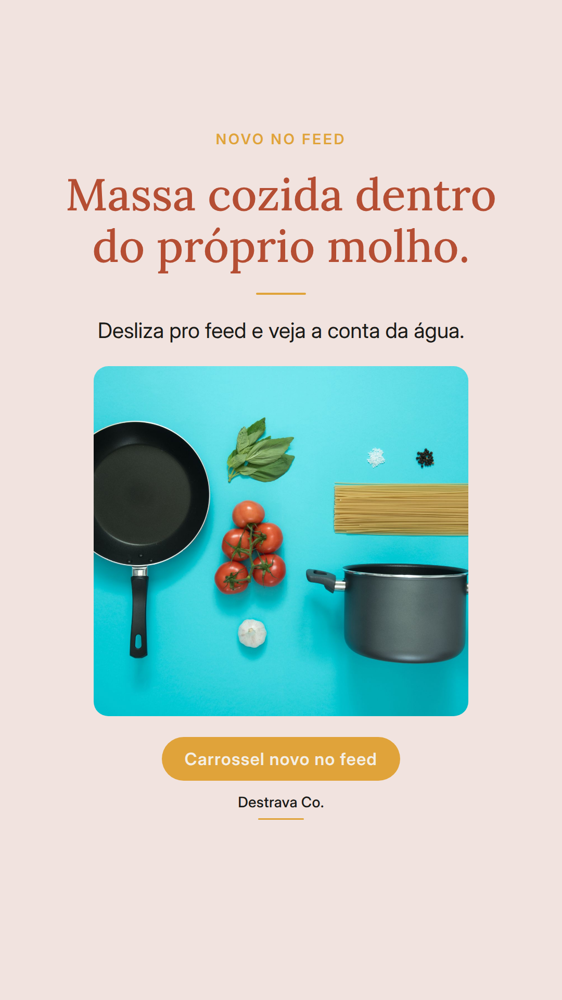
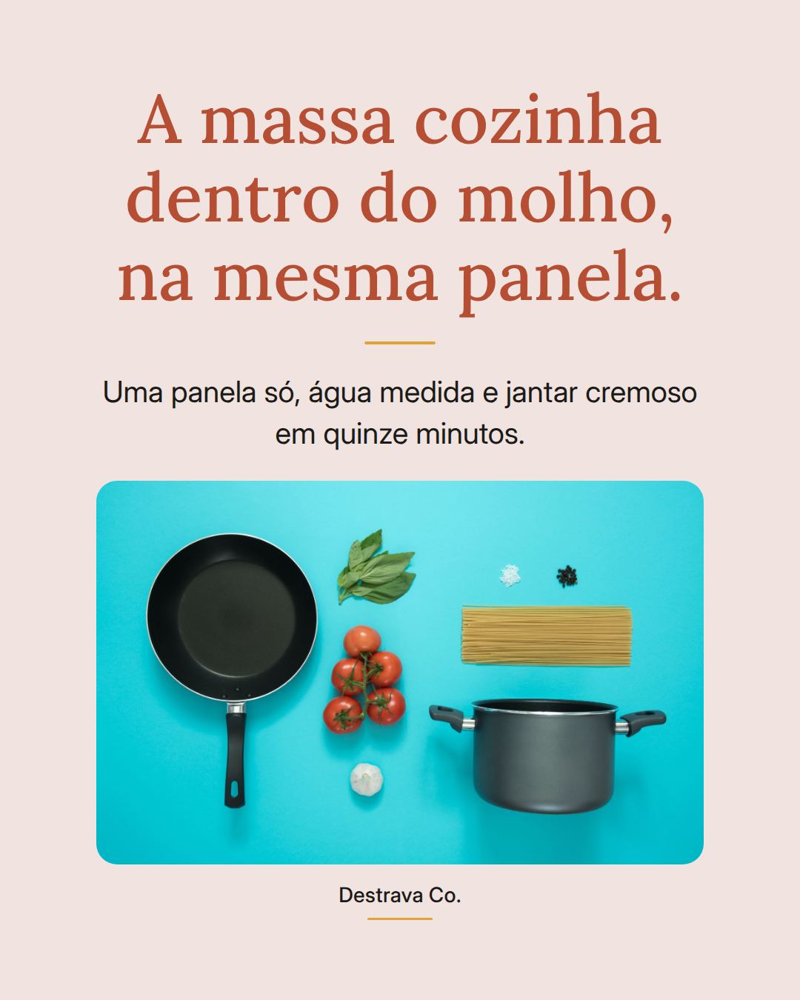
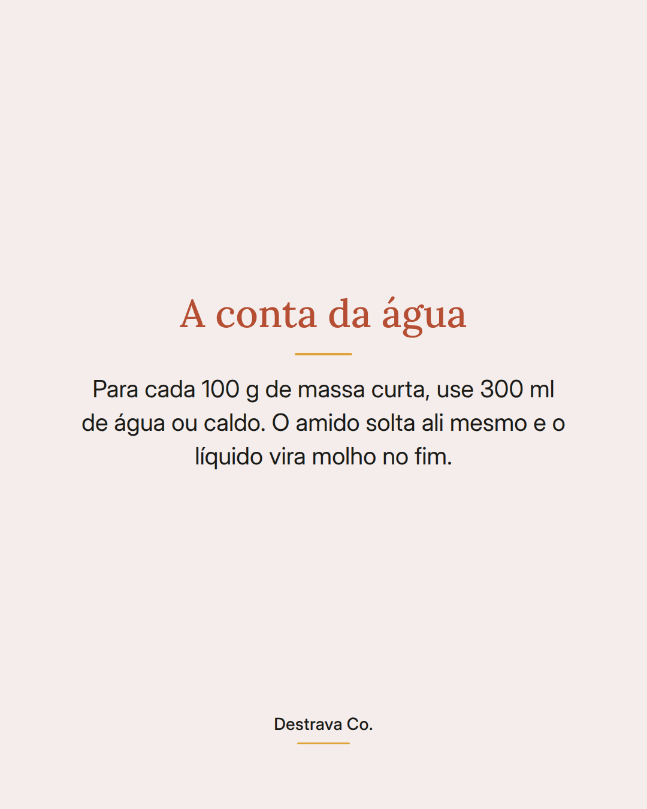
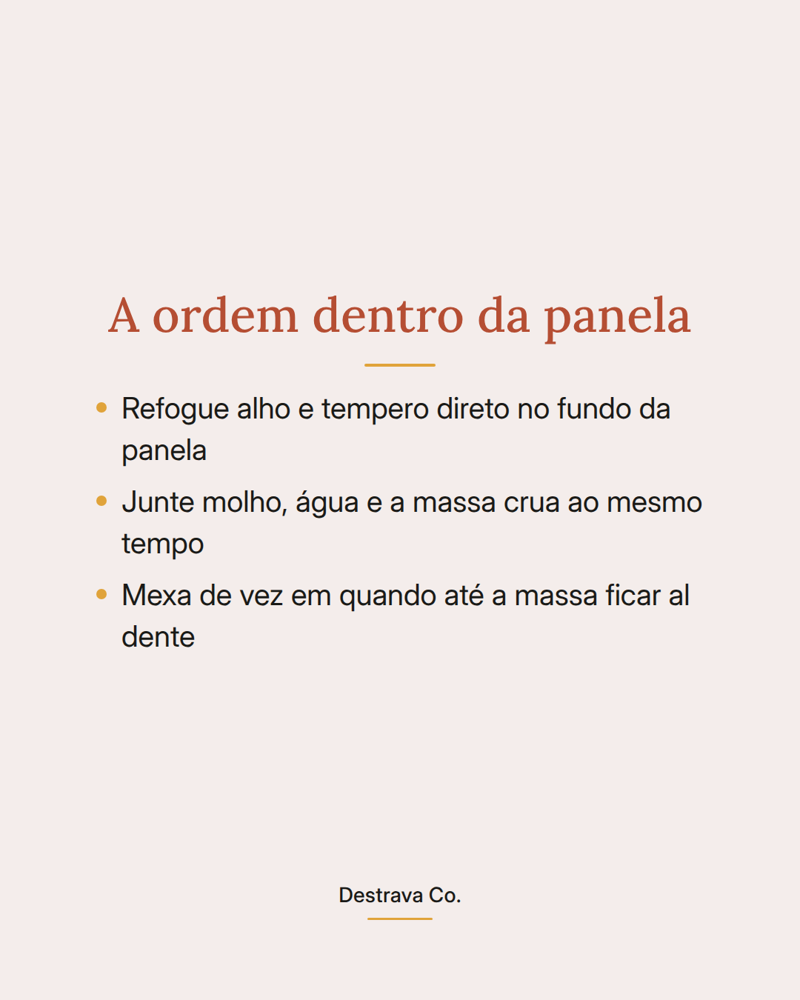
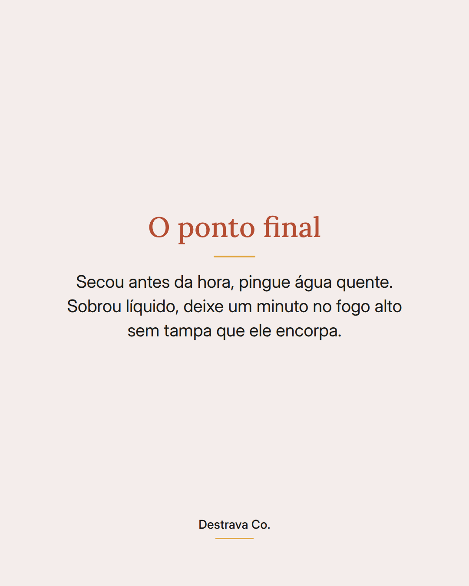

Massa cozida dentro do próprio molho: uma panela só, água medida e o jantar pronto em quinze minutos.
A regra é simples: 300 ml de água ou caldo para cada 100 g de massa curta. Tudo entra junto, massa crua inclusive, e o amido que sai dela engrossa o molho sem precisar de nada a mais.
Menos louça, menos escorredor, menos panela ocupando boca do fogão. E o molho fica agarradinho na massa, não escorrendo no fundo do prato.
Salva pra testar no jantar desta semana e manda pra quem sempre chega em casa com fome e sem paciência. Se quiser mais ideias assim, o PDF com 20 receitas rápidas de até 15 minutos está te esperando por aqui.